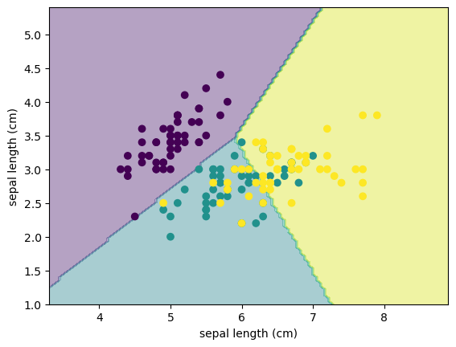
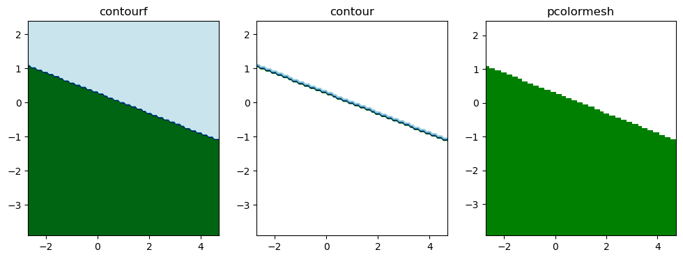
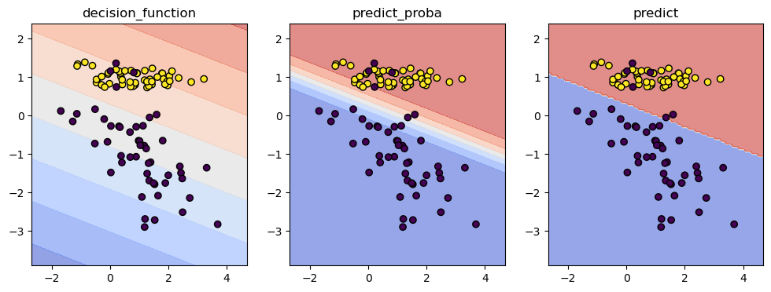
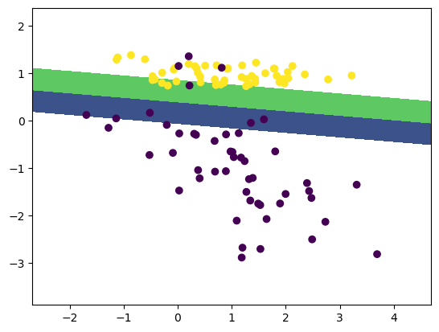
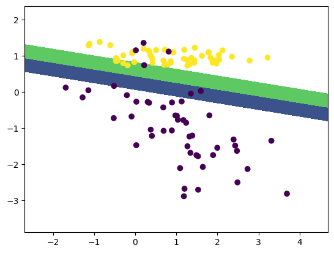
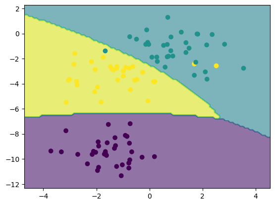

快速可视化机器学习：
提供了各类显示对象:
ConfusionMatrixDisplayinspection.DecisionBoundaryDisplay决策边界可视化
提供了接受数据的方法：
from_estimator提供 fit后的模型、Xfrom_predictions提供y_real, y_pred
from_estimatorresponse_method: 目标值， 比如分类和预测
决策边界#
示例1： 逻辑回归的决策边界#
from sklearn.inspection import DecisionBoundaryDisplay
from sklearn.datasets import load_iris
from sklearn.linear_model import LogisticRegression
import matplotlib.pyplot as plt
iris = load_iris()
X = iris.data[:, :2]
classifier = LogisticRegression().fit(X, iris.target)
bounddis = DecisionBoundaryDisplay.from_estimator(
estimator=classifier,
X=X,
alpha = 0.4,
xlabel=iris.feature_names[0],
ylabel=iris.feature_names[0],
)
bounddis.ax_.scatter(X[:, 0], X[:, 1], c = iris.target)
<matplotlib.collections.PathCollection at 0x209ee310760>

plot_method参数: 对应plt几种图#
contourf: 平滑填充分类区域
contour: 只画边界线
pcolormesh: 比contourf更加粗糙，但快点
from sklearn.datasets import make_classification
from sklearn.discriminant_analysis import LinearDiscriminantAnalysis
from sklearn.inspection import DecisionBoundaryDisplay
import matplotlib.pyplot as plt
X, y = make_classification(
n_features=2, n_redundant=0, n_informative=2,
n_clusters_per_class=1, random_state=0
)
clf = LinearDiscriminantAnalysis().fit(X, y)
fig, axes = plt.subplots(nrows=1, ncols=3, figsize=(12, 4))
methods = ['contourf', 'contour', 'pcolormesh']
for ax, method in zip(axes, methods):
disp = DecisionBoundaryDisplay.from_estimator(
clf, X, response_method='predict',
plot_method=method,
ax = ax,
cmap = 'ocean'
)
ax.set_title(method)

response_method参数：如何衡量到决策边界的距离？#
绘制决策边界：每个点属于哪个类？有多远
decision_function: 距离测量仪， 边界是距离=0的线，距离分正负predict_proba: 概率仪，边界是概率=0.5的线，概率0~1predict: 投票结果，没有边界，就是明确的离散块
from sklearn.datasets import make_classification
from sklearn.discriminant_analysis import LinearDiscriminantAnalysis
from sklearn.inspection import DecisionBoundaryDisplay
import matplotlib.pyplot as plt
X, y = make_classification(n_features=2, n_redundant=0, n_informative=2,
n_clusters_per_class=1, random_state=0)
clf = LinearDiscriminantAnalysis().fit(X, y)
fig, axes = plt.subplots(1, 3, figsize=(12, 4))
methods = ['decision_function', 'predict_proba', 'predict']
for ax, method in zip(axes, methods):
DecisionBoundaryDisplay.from_estimator(
clf, X, response_method=method, plot_method='contourf',
ax=ax, cmap='coolwarm', alpha=0.6
)
ax.scatter(X[:, 0], X[:, 1], c=y, edgecolor='k')
ax.set_title(method)
plt.show()

levels参数： 控制绘制几个层级
二分类, $f(x) = 0$ 分界面，
levels=[0]即决策边界线。 如果svm，levels=[-1, 0, 1]3条间隔线概率值：
levels=[0.2, 0.5, 0.8]即在这些输出概率值绘制连续值
示例
from sklearn.datasets import make_classification
from sklearn import svm
from sklearn.inspection import DecisionBoundaryDisplay
import matplotlib.pyplot as plt
X, y = make_classification(
n_features=2,
n_redundant=0,
n_informative=2,
n_clusters_per_class=1,
random_state=0
)
clf = svm.SVC(kernel='linear').fit(X, y)
fig, ax = plt.subplots()
DecisionBoundaryDisplay.from_estimator(
clf,
X,
response_method='decision_function',
levels = [-1, 0, 1], # 结合response method 表示距离
ax = ax
)
ax.scatter(X[:, 0], X[:, 1], c=y)
<matplotlib.collections.PathCollection at 0x2a7f637f880>

clf.predict(X) # svc预测结果为 0，1二分类
array([1, 0, 1, 1, 1, 0, 0, 1, 0, 1, 1, 0, 1, 1, 0, 0, 1, 0, 1, 1, 0, 1,
1, 1, 1, 1, 1, 0, 0, 0, 0, 1, 0, 0, 0, 0, 0, 0, 1, 1, 0, 1, 0, 0,
0, 1, 1, 0, 1, 0, 1, 1, 0, 1, 0, 1, 0, 0, 1, 0, 1, 1, 0, 1, 0, 1,
1, 1, 0, 1, 1, 0, 0, 1, 1, 0, 1, 1, 1, 0, 0, 1, 0, 1, 0, 0, 0, 0,
1, 1, 1, 0, 1, 0, 1, 1, 1, 0, 1, 1])
from sklearn.linear_model import LogisticRegression
clf = LogisticRegression().fit(X, y)
fig, ax = plt.subplots()
DecisionBoundaryDisplay.from_estimator(
clf,
X,
response_method='predict_proba',
levels = [0.25, 0.5, 0.75],
ax = ax
)
ax.scatter(X[:, 0], X[:, 1], c=y)
<matplotlib.collections.PathCollection at 0x2a7f716f850>

clf.predict(X) # ??????
array([1, 0, 1, 1, 1, 0, 0, 1, 0, 1, 1, 0, 1, 1, 0, 0, 1, 0, 1, 1, 0, 1,
1, 1, 1, 1, 1, 0, 0, 0, 0, 1, 0, 0, 0, 0, 0, 0, 1, 1, 0, 1, 0, 0,
0, 1, 1, 0, 1, 0, 1, 1, 0, 1, 0, 1, 0, 0, 1, 0, 1, 1, 0, 1, 0, 1,
1, 1, 0, 1, 1, 0, 0, 1, 1, 0, 1, 1, 1, 0, 0, 1, 0, 1, 0, 0, 0, 0,
1, 1, 1, 0, 1, 0, 1, 1, 1, 0, 1, 1])
from sklearn.datasets import make_blobs
from sklearn import svm
X, y = make_blobs(centers=3, random_state=2, n_features=2)
clf = svm.SVC(kernel='rbf', probability=True).fit(X, y)
fig, ax = plt.subplots()
DecisionBoundaryDisplay.from_estimator(
clf,
X,
response_method='predict',
ax = ax,
alpha = 0.6
)
ax.scatter(X[:, 0], X[:, 1], c=y)
<matplotlib.collections.PathCollection at 0x2a7f7415130>
